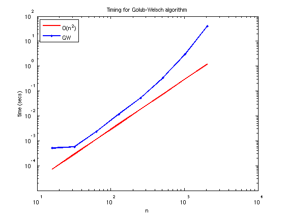
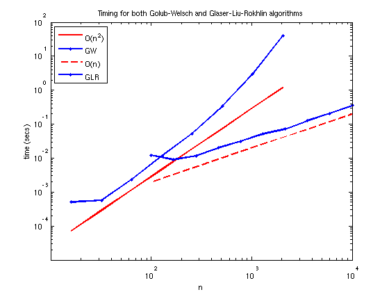

Gauss quadrature nodes and weights
Nick Hale, 8th November 2011
Contents
(Chebfun example quad/GaussQuad.m)
Guass quadrature
Gauss (or more specifically "Gauss-Legendre") quadrature [1] provides an approximation to the integral of a function f over the interval [-1, 1] (which may be trivially scaled to any finite interval [a, b]) by evaluating f at a set of n "nodes" x = {x_j} and summing with some specified "weights" w = {w_j}:
1 n
/ __
I = | f(x) dx \approx \ w_j f(x_j) = I_n .
/ /_
-1 j=1A derivation of Gauss quadrature can be found in almost any numerical analysis textbook, so we refrain from repeating this here. Instead, we focus on two methods for computing the nodes x and weights w. In particular, we show that the Chebfun routine LEGPTS (which was implemented by me!) can compute these in a fraction of a second for thousands of points:
tic
[x w] = legpts(1e4);
toc
Elapsed time is 0.390027 seconds.
and just two or three seconds for hundreds of thousands:
tic
[x w] = legpts(1e5);
toc
Elapsed time is 3.702111 seconds.
Golub-Welsch algorithm
The classical method for computing the Gauss nodes and weights is the Golub-Welsch algorithm [2], which reduces the problem to a symmetric tridiagonal eigenvalue problem. We refrain from deriving this relation, but give a small snippet of the code (borrowed from [3, p. 129]).
n = 5; format short beta = .5./sqrt(1-(2*(1:n-1)).^(-2)); % 3-term recurrence coeffs T = diag(beta,1) + diag(beta,-1) % Jacobi matrix [V,D] = eig(T); % Eigenvalue decomposition x = diag(D); [x,i] = sort(x); % Legendre points w = 2*V(1,i).^2; % Quadrature weights
T =
0 0.5774 0 0 0
0.5774 0 0.5164 0 0
0 0.5164 0 0.5071 0
0 0 0.5071 0 0.5040
0 0 0 0.5040 0
Chebfun's LEGPTS routine (so named as the Gauss-Legendre nodes are roots of the degree N+1 Legendre polynomial), called with the 'GW' flag, returns the same result:
[x2 w2] = legpts(n,'GW');
norm(x-x2)
norm(w-w2)
ans = 1.2076e-16 ans = 6.0809e-16
(The slight difference, on the order of rounding error, occurs because LEGPTS explicitly enforces that the nodes and weights are symmetric about zero so that the integral of f(x) = x is computed exactly.)
w*x
w2*x2
ans =
-1.1102e-16
ans =
0
In the code above we called MATLAB's EIG to solve the eigenvalue problem, which, since requires O(n^3) time, as we demonstrate by computing the nodes and weights for various values of n from 16 to 2048:
nn1 = 2.^(4:11);
k = 0; tt1 = zeros(numel(nn1),1);
for n = nn1
k = k+1;
tic
[x w] = legpts(n,'GW');
tt1(k) = toc;
end
scl = .5*tt1(3)/nn1(3).^2;
loglog(nn1,scl*nn1.^2,'-r',nn1,tt1,'.-b','linewidth',2); hold on
xlabel('n'); ylabel('time (secs)'); legend('O(n^2)','GW','location','nw')
title('Timing for Golub-Welsch algorithm')
axis([10 1e4 1e-5 100])
 Glaser-Liu-Rokhlin algorithm
In their 2007 paper [3], Glaser, Liu, and Rokhlin presented a fast algorithm to compute the Gauss quadature nodes and weights in O(n) time. Their algorithm, which is based upon using Newton iterations and power series expansions derived from the recurrence relations satisfied by the Legendre polynomials, has been implemented in Chebfun, and is used by default in LEGPTS for larger values of n.
Here we verify the linear time it takes to compute the nodes and weights for various n, comparing with the time taken by the Golub-Welsch algorithm:
nn2 = ceil(logspace(2,4,10)); k = 0; tt2 = zeros(numel(nn2),1);
for n = nn2
k = k+1;
tic
[x w] = legpts(n);
tt2(k) = toc;
end
scl = .5*tt2(5)/nn2(5);
loglog(nn2,scl*nn2,'--r',nn2,tt2,'.-b','linewidth',2); hold off,
legend('O(n^2)','GW','O(n)','GLR','location','nw')
set(gca,'xtick',10.^(2:4)), xlim([0 1e4])
title('Timing for both Golub-Welsch and Glaser-Liu-Rokhlin algorithms')
axis([10 1e4 1e-5 100])
 We see that the GLR algorithm can compute 10000 nodes and weights in around the same time as GW can do 500! This gap will only widen as n is increased.
Let's go crazy!
Using the GLR algorithm, my laptop and Chebfun can compute a million Guass quadrature nodes and weights in a little under thirty seconds. How quickly can you do it? :)
% tic, [x w] = legpts(1e6); toc
Gauss-Jacobi, Gauss-Laguerre, and Gauss-Hermite
Both the GW and GLR algorithms are able to compute Gauss quadrature nodes and weights for other weight functions, and the classical examples of these are also available in Chebfun. In particular:
Name | w(x) | domain | Chebfun routine
-----------------------------------------------------------------
Gauss-Legendre | 1 | [-1 1] | LEGPTS(n)
Gauss-Jacobi | (x+1)^a*(1-x)^b | [-1 1] | JACPTS(n,a,b)
Gauss-Laguerre | exp(-x) | [0 inf] | LAGPTS(n)
Gauss-Hermite | exp(-x^2) | [-inf inf] | HERMPTS(n)Finally, we close with a comment that although Gauss quadrature is optimal in the sense of integrating polynomials of degree 2n+1 exactly, it can often be just as fast (and often faster) to use Clenshaw-Curtis quadrature in Chebyshev points, which is precisely how Chebfun integrates with its SUM command. For more details on the relationship between Gauss and Clenshaw-Curtis quadrature see [5] and [6].
References
[1] http://en.wikipedia.org/wiki/Gaussian_quadrature
[2] G.H. Golub and J.A. Welsch, "Calculation of Gauss quadrature rules", Math. Comp. 23 (1969), 221-230.
[3] L. N. Trefethen, Spectral Methods in MATLAB, SIAM, 2000.
[4] A. Glaser, X. Liu and V. Rokhlin, "A fast algorithm for the calculation of the roots of special functions", SIAM Journal on Scientific Computing", 29 (2007), 1420-1438.
[5] L. N. Trefethen, Approximation Theory and Approximation Practice, draft textbook at http://www.maths.ox.ac.uk/chebfun/ATAP.
[6] L. N. Trefethen, "Is Gauss quadrature better than Clenshaw-Curtis?", SIAM Review 50:67-87, 2008.